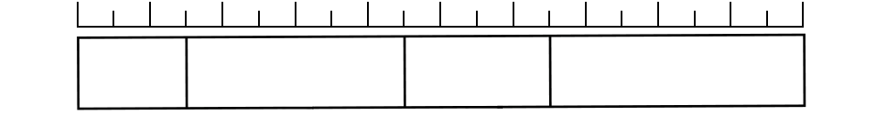

- 문제 1
- 문제 2
- 문제 3
- 문제 4
- 문제 5
-
성진이네 학교 6학년 학생들이 좋아하는 과목을 조사하여 나타낸 표입니다. 조사한 학생은 모두 몇 명인가요?
과목 국어 수학 과학 사회 체육 합계 학생 수(명) 30 60 20 50 40 백분율(%) 15 10 25 100 명200 -
성진이네 학교 6학년 학생들이 좋아하는 과목을 조사하여 나타낸 표입니다. 빈칸을 채워 띠그래프를 완성하시오.
과목 국어 수학 과학 사회 체육 합계 학생 수(명) 30 60 20 50 40 백분율(%) 15 10 25 100 -
성진이네 학교 6학년 학생들이 좋아하는 과목을 조사하여 나타낸 그래프입니다. 띠그래프를 보고 알 수 있는 내용을 두 가지 이상 써 보시오.
예수학을 좋아하는 학생 수가 가장 많습니다.
예체육을 좋아하는 학생 수는 국어를 좋아하는 학생 수의 두 배입니다.
-
형준이네 반 학생들의 혈액형을 조사하여 나타낸 띠그래프입니다. 가장 많은 학생들의 혈액형은 무엇입니까?
학생들의 혈액형0102030405060708090100 (%)A형B형AB형O형O형 -
형준이네 반 학생들의 혈액형을 조사하여 나타낸 띠그래프입니다. 혈액형이 A형인 학생은 전체의 몇 %입니까?
학생들의 혈액형(15 %)(30 %)(35 %)(20 %)0102030405060708090100 (%)A형B형AB형O형15 %